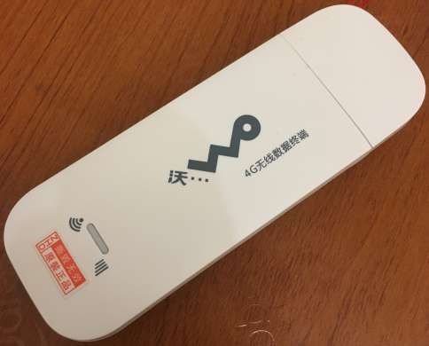
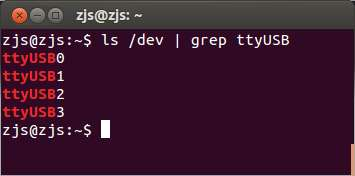
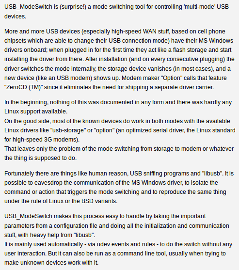

之前有一篇《Linux 使用USB 3G上网卡（wvdial的使用）》，不如一鼓作气，把USB 4G上网卡也搞定。本来以为4G上网卡应该和3G上网卡一样容易吧，后来发现还是复杂了一些。当然，也可能是因为我用的不是华为的芯片（道听途说华为的芯片对Linux最友好）。不过华为的USB 4G模块太贵了，好几百，我选了淘宝上最便宜的4G模块（一定要看清楚是4G网络模块，而不是支持4G卡的3G模块），型号是极行速K8（联通USB 4G模块），外观如下：

在Ubuntu 12.04下，我把K8插入电脑，稍过片刻执行
ls /dev | grep ttyUSB
结果没有任何输出，说明没有被识别。反复插拔了几次，都是无法识别，就想先看看能不能在win 7下使用，于是就切换到win 7。在win 7上，K8自动被识别为一个类似U盘的存储设备，点开里面自带了驱动程序，手工安装运行，就会出来一个客户端，然后就能个连接网络了。
看来硬件没有问题。于是我重启进入Ubuntu，再次执行
ls /dev | grep ttyUSB
惊奇地发现居然有ttyUSB0、ttyUSB1、ttyUSB2和ttyUSB3这么4个ttyUSB了：

有了这么几个ttyUSB以后，我就意识到接下来的事情应该和《Linux 使用USB 3G上网卡（wvdial的使用）》中是一样的了。果然，在使用了wvdial之后，就成功连接上了。
那么就奇怪了，这次怎么就能识别了呢？怀着疑问，我又重新插拔了一下USB 4G模块，结果Linux又识别不了了！我忽然明白了，很可能是因为之前用win 7设置了K8，而重启的过程中K8没有断电，所以里面的状态一直保留了下来，进入Linux之后就能被识别。如果这个推论成立，那么说明4G网卡应该有两种状态，一种就是在win 7上刚刚插入时的状态，会被识别为U盘，而安装好驱动程序之后，驱动程序会把4G网卡设置为串口设备。
为了验证我的猜想，我又进入win 7，用K8连上网，再重启进入Linux，结果又可以看到4个ttyUSB设备了。后来我终于在usb_modeswitch这个软件中找到了答案，其官网介绍如下：

看来这种USB WAN网卡确实是存在两种状态，而这种状态转换需要使用usb_modeswitch来实现。接下来的重点就是安装usb_modeswitch。官网上都写的很清楚，但是自己记录一下能够加深体会。
1、下载、解压usb_modeswitch：
cd ~ wget http://www.draisberghof.de/usb_modeswitch/usb-modeswitch-2.4.0.tar.bz2 tar -xvf usb-modeswitch-2.4.0.tar.bz2
具体文件名可能以后随着版本会变化，需要注意。
2、安装usb_modeswitch：
cd usb-modeswitch-2.4.0 sudo make install
具体文件名可能以后随着版本会变化，需要注意。
3、下载、解压usb_modeswitch_data：
cd ~ wget http://www.draisberghof.de/usb_modeswitch/usb-modeswitch-data-20160803.tar.bz2 tar -xvf usb-modeswitch-data-20160803.tar.bz2
具体文件名可能以后随着版本会变化，需要注意。
4、安装usb_modeswitch_data：
cd usb-modeswitch-data-20160803 sudo make install
5、重启电脑。
然后把K8模块插入电脑后，就可以发现，已经有了ttyUSB0、ttyUSB1、ttyUSB2和ttyUSB3这么4个ttyUSB了。
接下来的事情就是按照《Linux 使用USB 3G上网卡（wvdial的使用）》中的描述，使用wvdialconf初始化配置文件，再用wvdial拨号，最后配置路由表就可以上网了。
该方法为自动识别，已经在Ubuntu 12.04 x86上和树莓派Raspbian Jessie上试验过。